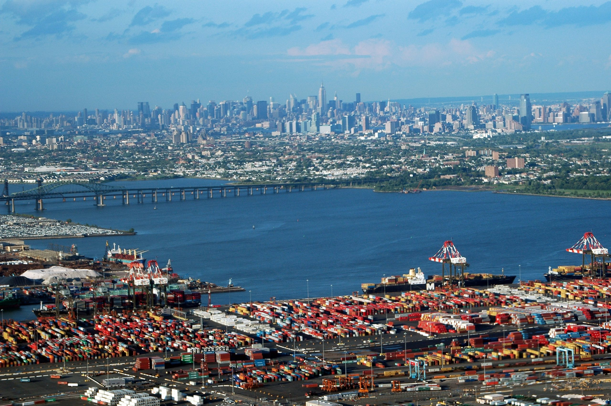
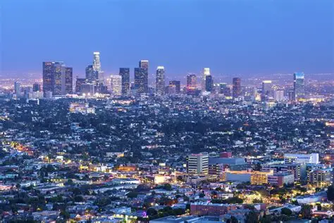
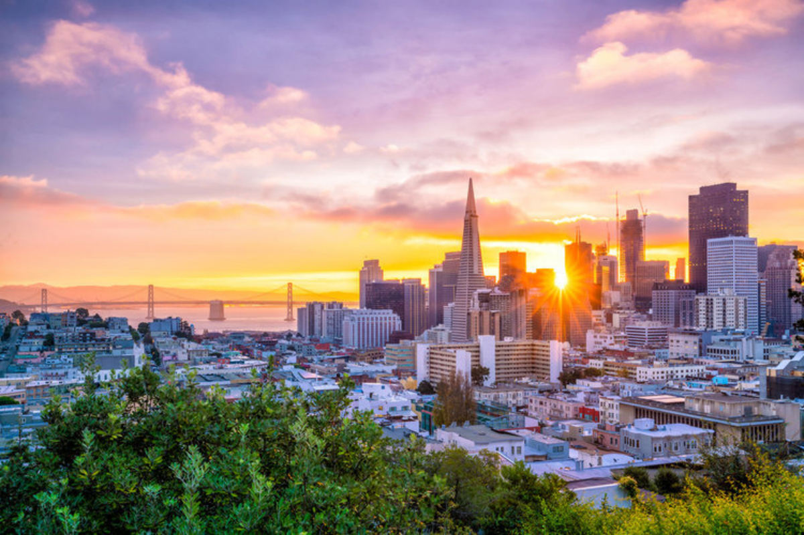
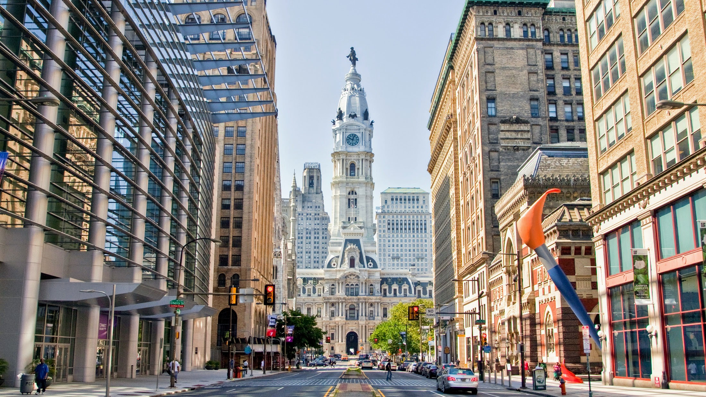
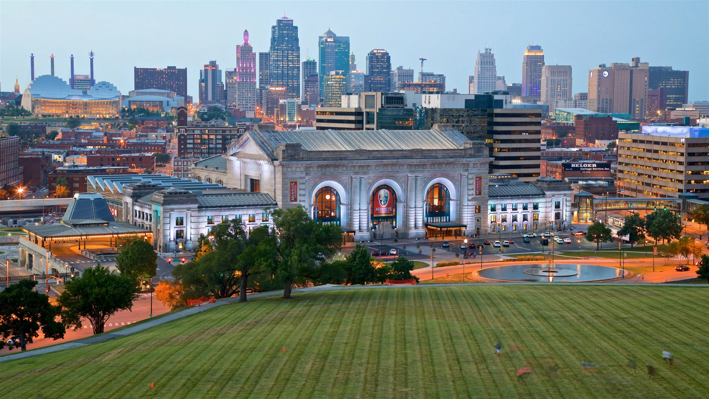

🇲🇽 México
3 sedes históricas con gran tradición futbolística.

Ciudad de México
Sede inaugural y templo histórico del Estadio Azteca.

Guadalajara
Epicentro occidental en el moderno Estadio Akron.

Monterrey
Moderna sede ubicada en el norte del país.
🇨🇦 Canadá
2 vibrantes metrópolis anfitrionas en territorio norteamericano.

Toronto
Importante centro financiero y cultural en Ontario.

Vancouver
Hermosa sede rodeada de naturaleza en la costa oeste.
🇺🇸 Estados Unidos
11 ciudades principales encargadas de albergar la mayor parte del torneo.

Nueva York / Nueva Jersey
Sede oficial de la gran final mundialista.

Los Ángeles
Gran centro cultural y deportivo de la costa oeste.

Dallas
Recinto de encuentros masivos y fases decisivas.

Miami
Puerta de entrada al turismo y eventos internacionales.

Atlanta
Importante centro tecnológico y deportivo del sur.

Seattle
Pasión futbolística en el noroeste pacífico.

San Francisco Bay Area
Innovación y deporte en el norte de California.

Houston
Gran infraestructura en el estado de Texas.

Philadelphia
Ciudad histórica sede de emocionantes partidos.

Kansas City
Corazón futbolístico del medio oeste.

Boston
Tradición académica y deportiva en Nueva Inglaterra.